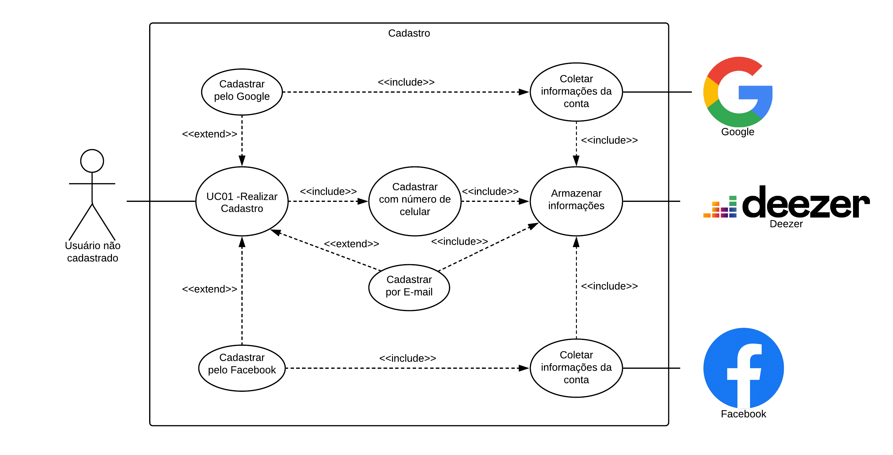
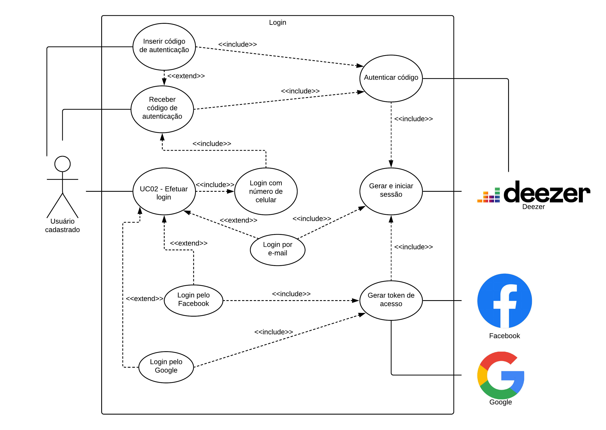
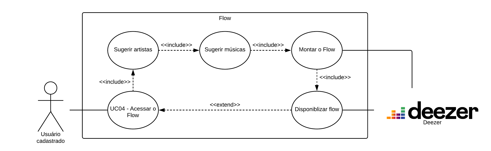
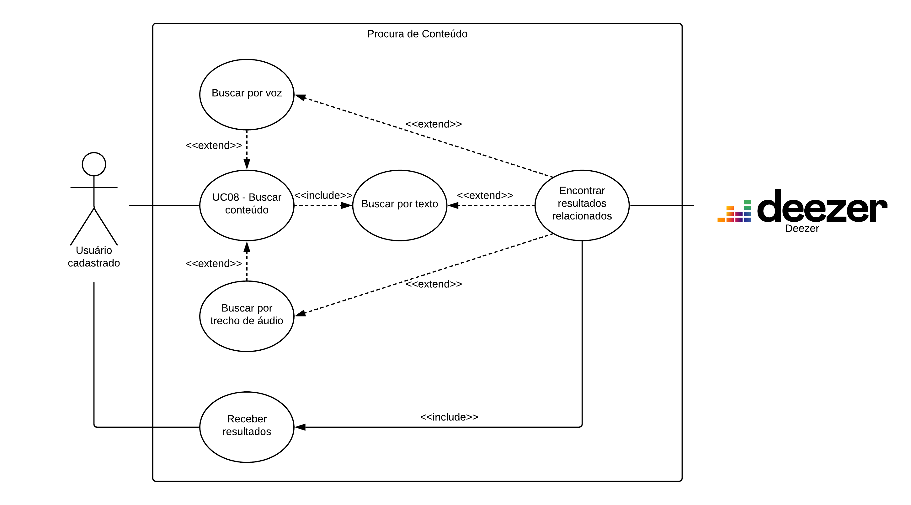
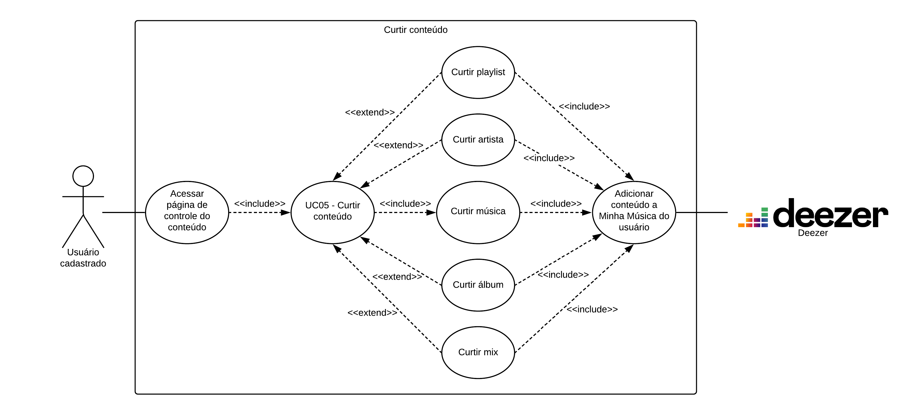

Diagramas de Caso de Uso
Versões
| Versão | Detalhes | Data |
|---|---|---|
| 1.0 | Versão Inicial. | 27/09/2019 |
| 1.1 | Adição de pesquisa de conteúdo e correção nos atores. | 29/09/2019 |
| 1.2 | Adição de curtir conteúdo. | 29/09/2019 |
| 1.3 | Adição de participantes e datas. | 29/09/2019 |
| 1.4 | Adição de correção de atores. | 23/11/2019 |
| 1.5 | Adição de referência aos casos de usos e referências. | 25/11/2019 |
Participantes
- Samuel Pereira
Cadastro de Usuário

Login de Usuário

Flow

Pesquisa de conteúdo

Curtir conteúdo

Referências
SERRANO, Milene; SERRANO, Maurício. Requisitos: Aula 13. Disponível em: <https://aprender.ead.unb.br/pluginfile.php/727236/mod_resource/content/1/Requisitos%20-%20Aula%20013a.pdf>. Acesso em: 25 nov 2019.